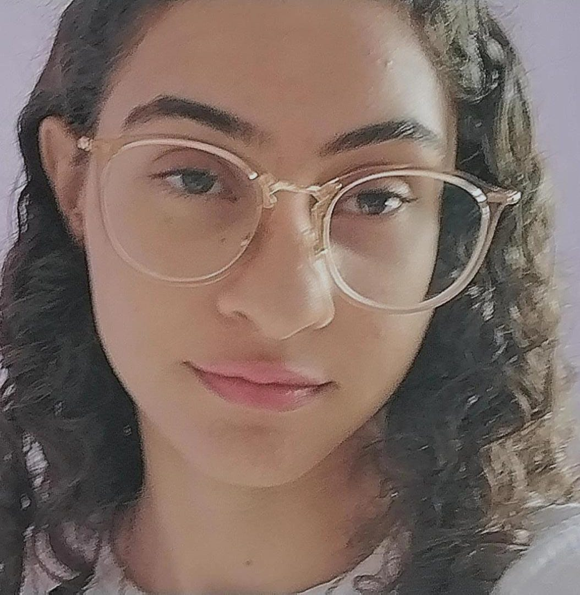

| Foto minha | Um pouco sobre mim |
|---|---|
|
 |
Me chamo Roberta, sou natural de Serra, ES, e vivo no Bairro Jardim Tropical com minha família. Atualmente sou estudante de Sistemas de Informação da Universidade Vila Velha (UVV). |
Atualmente busco um estágio na área de análise de sistema, para aprimorar meus conhecimentos na área de ti, no futuro pretendo me integrar na área de segurança de dados, pois é uma área |
| Conteúdos Aprendidos |
|---|
|
Estava aprendendo Inglês, mas tive que dar uma pausa no curso, em 2026 pretendo retornar ao curso. |
Recentemente participei de um evento tecnológico na minha faculdade, onde assisti uma palestra e vi vários projetos incríveis feita pelos alunos. O evento é bem popular, é o INOVAWEEK.